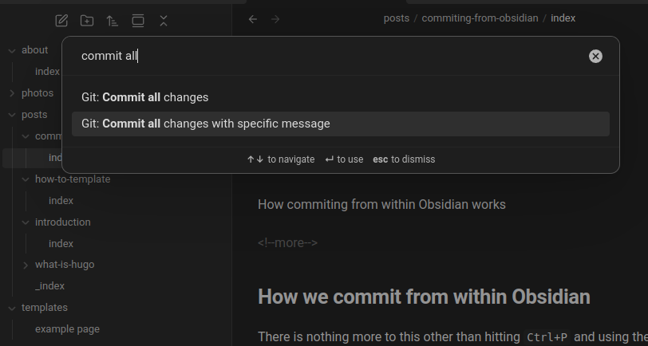

How commiting from within Obsidian works
There is nothing more to this other than hitting Ctrl+P and using the Git: Commit all changes with specific message command.

hugo serveIf you use hugo serve while using Obsidian, Obsidian saves on almost every keystroke, which mean the site literally rerenders on each stroke.